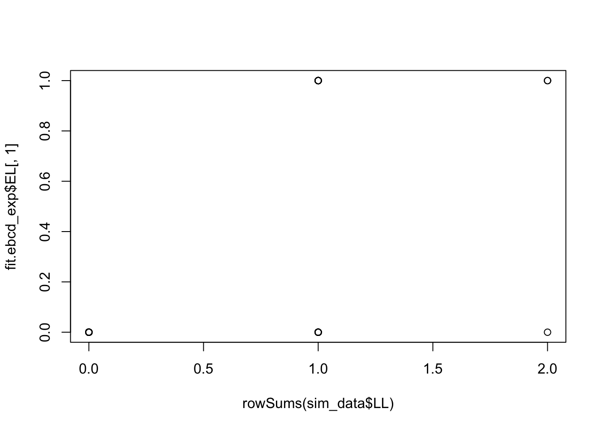
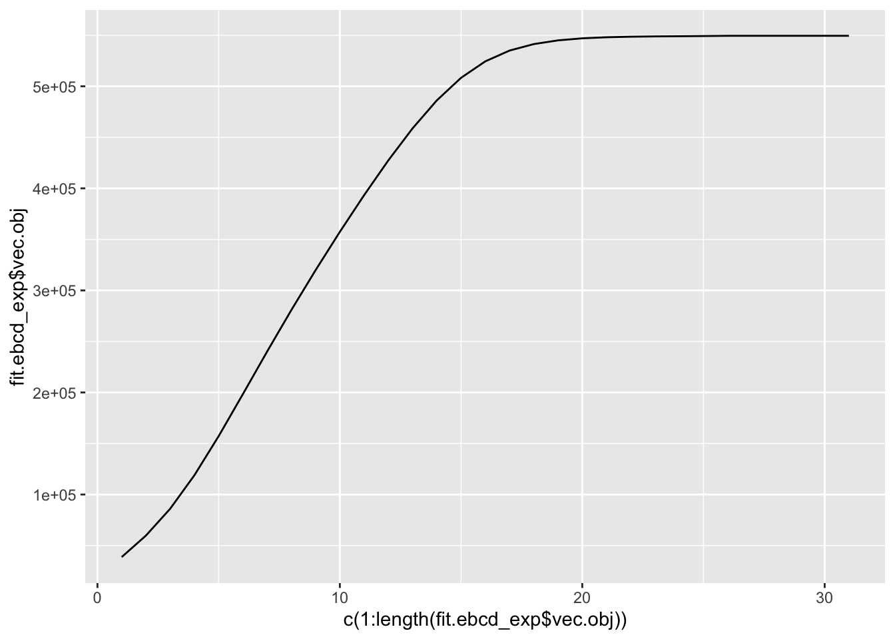

other-binary-simulations
Annie Xie
2024-09-13
Last updated: 2024-10-02
Checks: 7 0
Knit directory: EBCD_GBCD_comparison/
This reproducible R Markdown analysis was created with workflowr (version 1.7.1). The Checks tab describes the reproducibility checks that were applied when the results were created. The Past versions tab lists the development history.
Great! Since the R Markdown file has been committed to the Git repository, you know the exact version of the code that produced these results.
Great job! The global environment was empty. Objects defined in the global environment can affect the analysis in your R Markdown file in unknown ways. For reproduciblity it’s best to always run the code in an empty environment.
The command set.seed(20240229) was run prior to running
the code in the R Markdown file. Setting a seed ensures that any results
that rely on randomness, e.g. subsampling or permutations, are
reproducible.
Great job! Recording the operating system, R version, and package versions is critical for reproducibility.
Nice! There were no cached chunks for this analysis, so you can be confident that you successfully produced the results during this run.
Great job! Using relative paths to the files within your workflowr project makes it easier to run your code on other machines.
Great! You are using Git for version control. Tracking code development and connecting the code version to the results is critical for reproducibility.
The results in this page were generated with repository version fb23292. See the Past versions tab to see a history of the changes made to the R Markdown and HTML files.
Note that you need to be careful to ensure that all relevant files for
the analysis have been committed to Git prior to generating the results
(you can use wflow_publish or
wflow_git_commit). workflowr only checks the R Markdown
file, but you know if there are other scripts or data files that it
depends on. Below is the status of the Git repository when the results
were generated:
Ignored files:
Ignored: .DS_Store
Ignored: .Rhistory
Ignored: code/.DS_Store
Ignored: data/.DS_Store
Untracked files:
Untracked: analysis/convergence-comparison-experiments.Rmd
Untracked: analysis/driftr-comparison.Rmd
Untracked: analysis/generalized-binary-comparison-experiments.Rmd
Untracked: code/drift_functions.R
Note that any generated files, e.g. HTML, png, CSS, etc., are not included in this status report because it is ok for generated content to have uncommitted changes.
These are the previous versions of the repository in which changes were
made to the R Markdown
(analysis/other-binary-simulations.Rmd) and HTML
(docs/other-binary-simulations.html) files. If you’ve
configured a remote Git repository (see ?wflow_git_remote),
click on the hyperlinks in the table below to view the files as they
were in that past version.
| File | Version | Author | Date | Message |
|---|---|---|---|---|
| Rmd | fb23292 | Annie Xie | 2024-10-02 | Add overlapping binary structure simulations |
Introduction
In this simulation, I want to compare EBCD and EBMF-Cov on simulated data where \(L\) is binary, but not necessarily hierarchical. This analysis is based off of Matthew’s analysis for testing EBMF-Cov on “simple simulations involving overlapping groups”.
Packages and Functions
library(ggplot2)
library(cowplot)
library(RColorBrewer)
library(ggrepel)
library(pheatmap)
library(gridExtra)
#library(Seurat)
library(Matrix)
library(ebnm)
library(flashier)
library(magrittr)
library(ashr)
library(irlba)
library(reshape2)
library(patchwork)
Attaching package: 'patchwork'The following object is masked from 'package:cowplot':
align_plotslibrary(fastTopics)Warning: package 'fastTopics' was built under R version 4.3.3library(gbcd)plot_heatmap <- function(L, title = "", colors_range = c("gray96", "red"), brks = NULL){
### define the color map
cols <- colorRampPalette(colors_range)(49)
if (is.null(brks) == TRUE){
brks <- seq(min(L), max(L), length=50)
}
plt <- pheatmap(L, show_rownames = FALSE, show_colnames = FALSE, cluster_rows = FALSE, cluster_cols = FALSE, color = cols, breaks = brks, main = title)
return(plt)
}#adapted from code used in Jason's thesis
plot_loadings <- function(L_est, Pop){
n <- nrow(L_est)
k <- ncol(L_est)
Idx <- rep(c(1:n), k)
Loading <- c(L_est)
Factor <- paste0('k=',c(sapply(c(1:k), function(x, n){rep(x, n)}, n = n)))
tib <- data.frame(Idx, Loading, Factor, Pop)
plt <- ggplot(tib, aes(x = Idx, y = Loading, col = Pop)) +
geom_point() +
geom_hline(yintercept = 0, linetype = "dashed") +
facet_grid(cols = vars(Factor)) +
theme(axis.title.x = element_blank(),
axis.title.y = element_blank(),
axis.ticks.x = element_blank(),
axis.ticks.y = element_blank(),
axis.text.x = element_blank(),
axis.text.y = element_blank(),
panel.spacing = unit(1, "lines"))
plot(plt)
}source("code/ebcd_functions.R")
source("~/Documents/PhD 3/Research/EBCD/gbcd_functions.R")compute_bures_wasserstein_distance <- function(A, B){
trA <- sum(diag(A))
trB <- sum(diag(B))
svdA <- svd(A)
sqrtA <- svdA$u %*% sqrt(diag(svdA$d)) %*% t(svdA$u)
# eigA <- eigen(A, symmetric = TRUE)
# sqrtA <- eigA$vectors %*% diag(sqrt(eigA$values)) %*% t(eigA$vectors)
C <- sqrtA %*% B %*% sqrtA
svdC <- svd(C)
sqrtC <- svdC$u %*% sqrt(diag(svdC$d)) %*% t(svdC$u)
# eigC <- eigen(C, symmetric = TRUE)
# sqrtC <- eigC$vectors %*% diag(sqrt(eigC$values)) %*% t(eigC$vectors)
inner_trace <- sum(diag(sqrtC))
bw_dist <- (trA + trB - 2*inner_trace)
return(bw_dist)
}3 Group Example
In this example, we simulate data with 3 overlapping groups. Each group contains a random 1/10 of the observations, so the groups do not overlap too much. (The entries of the loadings matrix are randomly generated from a Bernoulli distribution with probability of success = 0.1). We start with a very small amount of noise (residual variance = 0.001^2).
Data Generation
sim_binary_loadings_data <- function(n,
p = 1000,
k,
indiv_sd,
constrain_F = FALSE,
seed = 666) {
set.seed(seed)
FF <- matrix(rnorm(k * p, sd = 1), ncol = k)
if (constrain_F) {
FF_svd <- svd(FF)
FF <- FF_svd$u
FF <- t(t(FF) * rep(1,k) * sqrt(p))
}
LL <- matrix(rbinom(n*k, 1, 0.1), nrow = n, ncol = k)
E <- matrix(rnorm(n * p, sd = indiv_sd), nrow = n)
return(list(Y = LL %*% t(FF) + E, LL = LL, FF = FF))
}sim_data <- sim_binary_loadings_data(100,
p = 1000,
k = 3,
indiv_sd = 0.001,
constrain_F = TRUE,
seed = 669)This is a heatmap of the loadings matrix, \(L\):
plot_heatmap(sim_data$LL)
This is a scatter plot of the loadings:
plot_loadings(sim_data$LL, rep('A', nrow(sim_data$LL)))This is a plot of the row sums of L (this is the number of groups that each individual is a part of):
plot(rowSums(sim_data$LL))This is a heatmap of \(F^{T}F\):
plot_heatmap(crossprod(sim_data$FF))observed.vals1 <- tcrossprod(sim_data$Y)/ ncol(sim_data$Y)This is a heatmap of the Gram matrix:
plot_heatmap(observed.vals1)EBCD with generalized binary prior
Hypothesis
I think EBCD with the generalized binary prior should theoretically be able to recover the correct loadings.
Analysis
I fit EBCD with the generalized binary prior.
set.seed(6287)
fit.ebcd1 <- ebcd(X = t(sim_data$Y), Kmax = 3, maxiter_backfit = 10000, ebnm_fn = ebnm::ebnm_generalized_binary)This is a heatmap of the estimate of \(L\), \(\hat{L}\):
plot_heatmap(fit.ebcd1$EL)
This is a scatter plot of the estimate of \(L\), \(\hat{L}\):
plot_loadings(fit.ebcd1$EL, rep('A', nrow(sim_data$LL)))These are plots of the estimated loadings against the true loadings:
plot(rowSums(sim_data$LL), fit.ebcd1$EL[,1])plot(sim_data$LL[,1], fit.ebcd1$EL[,2])plot(sim_data$LL[,2], fit.ebcd1$EL[,1])plot(sim_data$LL[,3], fit.ebcd1$EL[,3])cor(fit.ebcd1$EL, sim_data$LL) [,1] [,2] [,3]
[1,] 0.008519267 0.999999999 -0.13815939
[2,] 1.000000000 0.008521735 -0.02815189
[3,] -0.028154838 -0.138159390 1.00000000ebcd.gb.fitted.vals1 <- tcrossprod(fit.ebcd1$EL)This is the L2 norm of the difference between the observed values and the fitted values.
sum((observed.vals1 - ebcd.gb.fitted.vals1)^2)[1] 6.669311e-06This is the L2 norm of the difference between the off-diagonal entries of the observed values and fitted values.
sum((observed.vals1 - ebcd.gb.fitted.vals1)^2) - sum((diag(observed.vals1) - diag(ebcd.gb.fitted.vals1))^2)[1] 6.669215e-06This is the Bures-Wasserstein distance between the observed values and the fitted values.
compute_bures_wasserstein_distance(observed.vals1, ebcd.gb.fitted.vals1)[1] 6.00282e-05This is a plot of the entries of the fitted values vs. observed values:
ggplot(data = NULL, aes(x = c(as.matrix(observed.vals1)), y = c(ebcd.gb.fitted.vals1))) + geom_point() + xlab('Observed Values') + ylab('Fitted Values') + geom_abline(slope = 1, intercept = 0, color = 'red')
This is a plot of the progression of the objective function
ggplot(data = NULL, aes(x = c(1:length(fit.ebcd1$vec.obj)), y = fit.ebcd1$vec.obj)) + geom_line()This is the number of iterations that the backfit did before the convergence criterion was satisfied:
length(fit.ebcd1$vec.obj)[1] 28This is the value of the objective function that was attained:
fit.ebcd1$vec.obj[length(fit.ebcd1$vec.obj)][1] 549696.1Observations
EBCD with the generalized binary prior was able to recover the true loadings matrix. The first factor in the EBCD estimate corresponds to the second factor in the true loadings matrix. The second factor in the EBCD estimate corresponds to the first factor in the true loadings matrix. Lastly, the third factor in the EBCD estimate corresponds to the third factor in the true loadings matrix. One concern I had was whether EBCD would do weird things like in the experiments with the tree datasets. It appears that hasn’t happened; the EBCD loadings estimate has binary entries. This suggests that EBCD with the generalized binary prior is able to recover binary structure.
EBCD ran for 28 backfit iterations. The progression of the ELBO does not see any sharp jumps.
EBMF-Cov with generalized-binary prior
Analysis
I fit EBMF-Cov with a generalized-binary prior.
#sink('~/Desktop/EBCD_GBCD_comparison_data/flash_cov_binary.tsv')
flash_cov_fit_gb <- flash_init(data = observed.vals1, var_type = 0) %>%
flash_set_verbose(-1) %>%
flash_greedy(ebnm_fn = ebnm::ebnm_generalized_binary, Kmax = 3) %>%
flash_backfit()Type Factor Iter ELBO ELBO.diff LF.max.chg
greedy 1 1 3806.49 NA 0.0198577274508664
greedy 1 2 3808.31 1.81919756425577 0.00278083840143764
greedy 1 3 3808.52 0.204591078938847 0.000924331993066269
greedy 1 4 3808.54 0.0235472644471884 0.000314185753069657
greedy 1 5 3808.54 0.00271168903373109 0.00010658274109801
greedy 1 6 3808.54 0.000312341579046915 3.61772595693366e-05
greedy 1 7 3808.54 3.59479495273263e-05 1.22818905806676e-05
greedy 2 1 5259.98 NA 0.0638962743417603
greedy 2 2 5291.82 31.8453183936517 0.0235673060459534
greedy 2 3 5294.79 2.97069570953772 0.00761450844079758
greedy 2 4 5295.07 0.274163272107216 0.00234428483623139
greedy 2 5 5295.09 0.0254213362532028 0.000716722420175259
greedy 2 6 5295.09 0.00235931764382258 0.000218659383099035
greedy 2 7 5295.09 0.000218807634155382 6.66648949575188e-05
greedy 2 8 5295.09 2.02237324629095e-05 2.03206575342396e-05
greedy 3 1 5534.97 NA 0.0370082296646965
backfit all 1 7296.90 1761.93313473364 0.134389973822689
backfit all 2 11610.08 4313.17643138869 0.108797363083913
backfit all 3 12616.37 1006.28819171996 0.1125091125758
backfit all 4 17619.08 5002.71677023141 0.181675965574765
backfit all 5 36570.78 18951.7017201442 0.151784735151732
backfit all 6 56761.73 20190.9441476501 0.01061622164818
backfit all 7 69453.38 12691.6563218062 0.00165470398296247
backfit all 8 79647.11 10193.7294768717 0.000291752596944
backfit all 9 90459.96 10812.8415621253 0.00015883476151704
backfit all 10 90704.12 244.165784934332 1.895976054677e-05
backfit all 11 90709.57 5.44698009434796 1.62107509888947e-05
backfit all 12 90722.07 12.5013477739994 5.55421382188771e-06
backfit all 13 90722.27 0.200799463651492 8.42618043866983e-07
backfit all 14 90722.66 0.391573011991568 4.25736171039137e-07
backfit all 15 90722.67 0.00802315144392196 9.34336804592206e-08
backfit all 16 90722.67 0.00156263211101759 9.78203010260081e-09
backfit all 17 90722.67 0.000170358020113781 1.63620874349402e-08
backfit all 18 90722.67 -3.99442797061056e-06 3.28051182535628e-10progress_flash_cov <- read.delim('~/Desktop/EBCD_GBCD_comparison_data/flash_cov_binary.tsv')
#sink()This is a heatmap of the estimate of \(L\), \(\hat{L}\):
plot_heatmap(flash_cov_fit_gb$L_pm)This is a scatter plot of the estimate of \(L\), \(\hat{L}\):
plot_loadings(flash_cov_fit_gb$L_pm, rep('A', nrow(sim_data$Y)))cor(flash_cov_fit_gb$L_pm, sim_data$LL) [,1] [,2] [,3]
[1,] 0.00851720 0.999999999 -0.13816014
[2,] -0.02815399 -0.138159390 1.00000000
[3,] 1.00000000 0.008530433 -0.02815316These are plots of the estimated loadings against the true loadings:
plot(rowSums(sim_data$LL), flash_cov_fit_gb$L_pm[,1])plot(sim_data$LL[,1], flash_cov_fit_gb$L_pm[,3])plot(sim_data$LL[,2], flash_cov_fit_gb$L_pm[,1])plot(sim_data$LL[,3], flash_cov_fit_gb$L_pm[,2])flash.gb.rescale <- ldf(flash_cov_fit_gb)
flash.gb.rescale.L <- flash.gb.rescale$L %*% diag(sqrt(flash.gb.rescale$D))
flash.gb.fitted.vals1 <- tcrossprod(flash.gb.rescale.L)This is the L2 norm of the difference between the observed values and the fitted values.
sum((observed.vals1 - flash.gb.fitted.vals1)^2)[1] 6.058846e-06This is the L2 norm of the difference between the off-diagonal entries of the observed values and fitted values.
sum((observed.vals1 - flash.gb.fitted.vals1)^2) - sum((diag(observed.vals1) - diag(flash.gb.fitted.vals1))^2)[1] 6.053867e-06This is the Bures-Wasserstein distance between the observed values and the fitted values.
compute_bures_wasserstein_distance(observed.vals1, flash.gb.fitted.vals1)[1] 5.994831e-05This is a plot of the entries of the fitted values vs. observed values:
ggplot(data = NULL, aes(x = c(as.matrix(observed.vals1)), y = c(flash.gb.fitted.vals1))) + geom_point() + xlab('Observed Values') + ylab('Fitted Values') + geom_abline(slope = 1, intercept = 0, color = 'red')This is a plot of the objective function progression (greedy + backfit):
ggplot(data = progress_flash_cov, aes(x = c(1:dim(progress_flash_cov)[1]), y = ELBO)) + geom_line() + xlab('Iteration') + geom_vline(xintercept = 17, linetype = 'dashed', color = 'red')This is plot of the objective function progression for just the backfit:
ggplot(data = progress_flash_cov[progress_flash_cov$Type == 'backfit',], aes(x = Iter, y = ELBO)) + geom_line() + xlab('Iteration')This is the value of the objective function that was attained:
flash_cov_fit_gb$elbo[1] 90722.67Observations
EBMF-Cov with the generalized binary prior also was able to recover the true loadings matrix. The first factor of the EBMF-Cov estimate corresponds to the second factor of the true loadings matrix. The second factor fo the EBMF-Cov estimate corresponds to the third factor of the true loadings matrix. Lastly, the third factor fo the EBMF-Cov estimate corresponds to the first factor of the true loadings matrix. The EBMF-Cov loadings estimate also has binary structure, though across the columns of \(\hat{L}\), the non-zero value differs. This suggests that EBMF-Cov with the generalized-binary prior is able to recover binary structure.
This run of EBMF-Cov used 16 iterations for the greedy portion and 18 iterations for the backfit portion.
GBCD
Analysis
# Note: setting Kmax = 3 leads to 5 factors
gbcd_fit1 <- fit_gbcd(Y = sim_data$Y, Kmax = 2)[1] "Form cell by cell covariance matrix..."
user system elapsed
0.003 0.000 0.003
[1] "Initialize GEP membership matrix L..."
Adding factor 1 to flash object...
Wrapping up...
Done.
Adding factor 2 to flash object...
Wrapping up...
Done.
Backfitting 2 factors (tolerance: 1.49e-04)...
Difference between iterations is within 1.0e+01...
Difference between iterations is within 1.0e+00...
Difference between iterations is within 1.0e-01...
Difference between iterations is within 1.0e-02...
Difference between iterations is within 1.0e-03...
Wrapping up...
Done.
Backfitting 2 factors (tolerance: 1.49e-04)...
Difference between iterations is within 1.0e-01...
Difference between iterations is within 1.0e-02...
Difference between iterations is within 1.0e-03...
Wrapping up...
Done.
user system elapsed
0.175 0.004 0.181
[1] "Estimate GEP membership matrix L..."
Backfitting 4 factors (tolerance: 1.49e-04)...
Difference between iterations is within 1.0e+04...
Difference between iterations is within 1.0e+03...
Difference between iterations is within 1.0e+02...
An update to factor 4 decreased the objective by 2.592e+00.
An update to factor 4 decreased the objective by 1.264e+00.
Difference between iterations is within 1.0e+01...
An update to factor 4 decreased the objective by 8.427e-01.
Difference between iterations is within 1.0e+00...
An update to factor 4 decreased the objective by 7.519e-01.
Difference between iterations is within 1.0e-01...
An update to factor 4 decreased the objective by 7.085e-01.
An update to factor 3 decreased the objective by 1.542e-05.
An update to factor 4 decreased the objective by 6.709e-01.
An update to factor 4 decreased the objective by 5.900e-01.
An update to factor 4 decreased the objective by 2.754e-01.
An update to factor 4 decreased the objective by 3.084e-02.
--Maximum number of iterations reached!
Wrapping up...
Done.
Backfitting 4 factors (tolerance: 1.49e-04)...
An update to factor 4 decreased the objective by 4.330e+00.
An update to factor 4 decreased the objective by 3.743e+00.
Difference between iterations is within 1.0e+00...
An update to factor 4 decreased the objective by 3.504e+00.
Difference between iterations is within 1.0e-01...
An update to factor 4 decreased the objective by 3.428e+00.
An update to factor 4 decreased the objective by 3.367e+00.
An update to factor 4 decreased the objective by 3.308e+00.
An update to factor 4 decreased the objective by 3.267e+00.
An update to factor 3 decreased the objective by 6.047e-06.
An update to factor 4 decreased the objective by 3.249e+00.
An update to factor 4 decreased the objective by 3.243e+00.
Difference between iterations is within 1.0e-02...
An update to factor 3 decreased the objective by 1.168e-05.
An update to factor 4 decreased the objective by 3.241e+00.
Difference between iterations is within 1.0e-03...
An update to factor 3 decreased the objective by 1.212e-05.
An update to factor 4 decreased the objective by 3.241e+00.
An update to factor 1 decreased the objective by 2.650e-04.
An update to factor 3 decreased the objective by 3.727e-06.
An update to factor 4 decreased the objective by 3.241e+00.
Difference between iterations is within 1.0e-04...
Wrapping up...
Done.
Backfitting 4 factors (tolerance: 1.49e-04)...
An update to factor 1 decreased the objective by 3.621e-04.
An update to factor 4 decreased the objective by 3.236e+00.
Wrapping up...
Done.
user system elapsed
0.713 0.018 0.744
[1] "Estimate GEP signature matrix F..."
Backfitting 4 factors (tolerance: 1.49e-03)...
--Estimate of factor 4 is numerically zero!
Difference between iterations is within 1.0e+01...
Difference between iterations is within 1.0e+00...
Difference between iterations is within 1.0e-01...
Wrapping up...
Done.
user system elapsed
0.634 0.016 0.658 This is a heatmap of the estimate of \(L\), \(\hat{L}\):
plot_heatmap(gbcd_fit1$L)This is a scatter plot of the entries of \(\hat{L}\), separated by factor:
plot_loadings(gbcd_fit1$L, rep('A', nrow(sim_data$Y)))cor(gbcd_fit1$L, sim_data$LL) [,1] [,2] [,3]
Baseline 0.008530851 0.999998904 -0.13962244
GEP1 0.999999998 0.008532465 -0.02815114
GEP2 -0.028178651 -0.138159389 0.99999999These are plots of the estimated loadings against the true loadings:
plot(rowSums(sim_data$LL), gbcd_fit1$L[,1])
plot(sim_data$LL[,1], gbcd_fit1$L[,2])plot(sim_data$LL[,2], gbcd_fit1$L[,1])plot(sim_data$LL[,3], gbcd_fit1$L[,3])Rescale GBCD loadings estimate:
#need to rescale estimate
fit.gbcd.rescale1 <- flash_fit_cov_ebnmf_fit_laplace(Y = sim_data$Y, Kmax = 3, prior = ebnm::ebnm_generalized_binary, thres = 0.9, extrapolate = FALSE, maxiter = 500, verbose = 1)Adding factor 1 to flash object...
Wrapping up...
Done.
Adding factor 2 to flash object...
Adding factor 3 to flash object...
Wrapping up...
Done.
Backfitting 3 factors (tolerance: 1.49e-04)...
Difference between iterations is within 1.0e+04...
Difference between iterations is within 1.0e+03...
Difference between iterations is within 1.0e+02...
Difference between iterations is within 1.0e+01...
Difference between iterations is within 1.0e+00...
Wrapping up...
Done.
Backfitting 3 factors (tolerance: 1.49e-04)...
Difference between iterations is within 1.0e-01...
Difference between iterations is within 1.0e-02...
Difference between iterations is within 1.0e-03...
Difference between iterations is within 1.0e-04...
Wrapping up...
Done.
Backfitting 3 factors (tolerance: 1.49e-04)...
Difference between iterations is within 1.0e-01...
Difference between iterations is within 1.0e-02...
Wrapping up...
Done.
Backfitting 3 factors (tolerance: 1.49e-04)...
Difference between iterations is within 1.0e-01...
Difference between iterations is within 1.0e-02...
Wrapping up...
Done.fit.gbcd.rescale2 <- flash_fit_cov_ebnmf_fit_L(dat = fit.gbcd.rescale1$dat, fit.gbcd.rescale1$fit.cov, Y=sim_data_4pop$Y, Kmax=7, prior = ebnm::ebnm_generalized_binary, thres = 0.9, extrapolate = FALSE, maxiter = 500, verbose = 1)Backfitting 5 factors (tolerance: 1.49e-04)...
An update to factor 3 decreased the objective by 4.186e-02.
An update to factor 3 decreased the objective by 6.340e-02.
An update to factor 3 decreased the objective by 7.898e-02.
An update to factor 3 decreased the objective by 9.431e-02.
An update to factor 3 decreased the objective by 1.063e-01.
An update to factor 3 decreased the objective by 1.146e-01.
An update to factor 3 decreased the objective by 1.200e-01.
Difference between iterations is within 1.0e+03...
An update to factor 3 decreased the objective by 1.235e-01.
An update to factor 3 decreased the objective by 1.259e-01.
An update to factor 3 decreased the objective by 1.275e-01.
An update to factor 3 decreased the objective by 1.589e-01.
An update to factor 3 decreased the objective by 2.968e-01.
An update to factor 3 decreased the objective by 4.032e-01.
An update to factor 3 decreased the objective by 4.792e-01.
An update to factor 3 decreased the objective by 5.272e-01.
An update to factor 3 decreased the objective by 5.485e-01.
An update to factor 3 decreased the objective by 5.639e-01.
An update to factor 3 decreased the objective by 5.750e-01.
An update to factor 3 decreased the objective by 5.831e-01.
An update to factor 3 decreased the objective by 5.891e-01.
An update to factor 3 decreased the objective by 5.936e-01.
An update to factor 3 decreased the objective by 5.969e-01.
An update to factor 3 decreased the objective by 5.995e-01.
--Maximum number of iterations reached!
Wrapping up...
Done.LDF Method of Scaling:
fit.gbcd.rescale.ldf <- ldf(fit.gbcd.rescale2$fit.cov, type = 'i')
fit.gbcd.rescale.L <- fit.gbcd.rescale.ldf$L %*% diag(sqrt(fit.gbcd.rescale.ldf$D))
thres <- 0.9
k.idx <- which(fit.gbcd.rescale2$corr > thres)
fit.gbcd.rescale.L <- fit.gbcd.rescale.L[,fit.gbcd.rescale2$k.order][,k.idx]gbcd.fitted.vals1 <- tcrossprod(fit.gbcd.rescale.L)This is the L2 norm of the difference between the observed values and the fitted values.
sum((observed.vals1 - gbcd.fitted.vals1)^2)[1] 1.880213This is the L2 norm of the difference between the off-diagonal entries of the observed values and fitted values.
sum((observed.vals1 - gbcd.fitted.vals1)^2) - sum((diag(observed.vals1) - diag(gbcd.fitted.vals1))^2)[1] 1.770487This is the Bures-Wasserstein distance between the observed values and the fitted values.
compute_bures_wasserstein_distance(observed.vals1, gbcd.fitted.vals1)[1] 0.08175191This is a plot of (a subset of) the off-diagonal entries of the fitted values vs. observed values:
ggplot(data = NULL, aes(x = c(as.matrix(observed.vals1)), y = c(gbcd.fitted.vals1))) + geom_point() + xlab('Observed Values') + ylab('Fitted Values') + geom_abline(slope = 1, intercept = 0, color = 'red')This is the objective function from the final flash fit (before the processing of the L estimates).
fit.gbcd.rescale2$fit.cov$elbo[1] 52603.21Observations
GBCD was able to recover the true loadings matrix. The first factor of the GBCD estimate corresponds to the second factor of the true loadings estimate. The second factor of the GBCD estimate corresponds to the first factor of the true loadings matrix. Lastly, the third factor of the GBCD estimate corresponds to the third factor of the true loadings estimate.
One interesting note is while GBCD did recover the correct loadings matrix, the fit of the estimate to the observed values is a little off. In the plot of the fitted values vs. observed values, we see that some of the samples with observed value equal to one have a fitted value a little larger than one. We see a similar thing for samples with observed value equal to two. This may be because I just computed \(LL^{T}\) as the fitted values while GBCD actually fits the model \(LL^{T} + \epsilon I\). I may need to take into account for the \(\epsilon I\) term. But theoretically, that should only add to the fitted value. So I’m not sure if that term would help the fit.
Another note is that when I set Kmax = 3, the GBCD loadings estimate had 5 columns. When I set Kmax = 2, the GBCD estimate had 3 columns.
EBCD with point-exponential prior
In Matthew’s analysis, he ran EBMF-Cov with the point-exponential prior. Therefore, I ran EBCD with the point-exponential prior on the data to compare.
Analysis
I fit EBCD with the point-exponential prior.
set.seed(6287)
fit.ebcd_exp <- ebcd(X = t(sim_data$Y), Kmax = 3, maxiter_backfit = 10000, ebnm_fn = ebnm::ebnm_point_exponential)This is a heatmap of the estimate of \(L\), \(\hat{L}\):
plot_heatmap(fit.ebcd_exp$EL)This is a scatter plot of the estimate of \(L\), \(\hat{L}\):
plot_loadings(fit.ebcd_exp$EL, rep('A', nrow(sim_data$Y)))
cor(fit.ebcd_exp$EL, sim_data$LL) [,1] [,2] [,3]
[1,] 0.008519266 0.999999999 -0.13815939
[2,] 1.000000000 0.008521737 -0.02815189
[3,] -0.028154838 -0.138159390 1.00000000These are plots of the estimated loadings against the true loadings:
plot(rowSums(sim_data$LL), fit.ebcd_exp$EL[,1])
plot(sim_data$LL[,1], fit.ebcd_exp$EL[,2])plot(sim_data$LL[,2], fit.ebcd_exp$EL[,1])plot(sim_data$LL[,3], fit.ebcd_exp$EL[,3])ebcd.exp.fitted.vals_exp <- tcrossprod(fit.ebcd_exp$EL)This is the L2 norm of the difference between the observed values and the fitted values.
sum((observed.vals1 - ebcd.exp.fitted.vals_exp)^2)[1] 6.668779e-06This is the L2 norm of the difference between the off-diagonal entries of the observed values and fitted values.
sum((observed.vals1 - ebcd.exp.fitted.vals_exp)^2) - sum((diag(observed.vals1) - diag(ebcd.exp.fitted.vals_exp))^2)[1] 6.668683e-06This is the Bures-Wasserstein distance between the observed values and the fitted values.
compute_bures_wasserstein_distance(observed.vals1, ebcd.exp.fitted.vals_exp)[1] 5.995309e-05This is a plot of the entries of the fitted values vs. observed values:
ggplot(data = NULL, aes(x = c(as.matrix(observed.vals1)), y = c(ebcd.exp.fitted.vals_exp))) + geom_point() + xlab('Observed Values') + ylab('Fitted Values') + geom_abline(slope = 1, intercept = 0, color = 'red')This is a plot of the progression of the objective function
ggplot(data = NULL, aes(x = c(1:length(fit.ebcd_exp$vec.obj)), y = fit.ebcd_exp$vec.obj)) + geom_line()
This is the number of iterations that the backfit did before the convergence criterion was satisfied:
length(fit.ebcd_exp$vec.obj)[1] 31This is the value of the objective function that was attained:
fit.ebcd_exp$vec.obj[length(fit.ebcd_exp$vec.obj)][1] 549491.8Observations
EBCD with the point-exponential prior was also able to recover the true loadings matrix. The first factor of the estimate corresponds to the second factor of the true loadings matrix. The second factor of the estimate corresponds to the first factor of the true loadings matrix. Lastly, the third factor of the estimate corresponds to the third factor of the true loadings matrix. Similar to before, the EBCD loadings estimate has binary entries. This suggests that EBCD with the point-exponential prior is able to recover binary structure.
This run of EBCD used 31 backfit iterations. That is comparable to the number of backfit iterations used for EBCD with the generalized binary prior. Similar to before, the objective function value did not experience any sharp jumps during the backfit.
10 Group Example
In this example, we now generate 10 groups, which will be more challenging to recover.
Data Generation
sim_data_10groups <- sim_binary_loadings_data(100,
p = 1000,
k = 10,
indiv_sd = 0.001,
constrain_F = TRUE,
seed = 669)This is a heatmap of the loadings matrix, \(L\):
plot_heatmap(sim_data_10groups$LL)This is a scatter plot of the loadings matrix:
plot_loadings(sim_data_10groups$LL, rep('A', nrow(sim_data_10groups$Y)))
This is a plot of the row sums of L (this is the number of groups that each individual is a part of):
plot(rowSums(sim_data_10groups$LL))This is a heatmap of \(F^{T}F\):
plot_heatmap(crossprod(sim_data_10groups$FF))observed.vals2 <- tcrossprod(sim_data_10groups$Y)/ ncol(sim_data_10groups$Y)EBCD with generalized-binary prior
Analysis
set.seed(6287)
fit.ebcd2 <- ebcd(X = t(sim_data_10groups$Y), Kmax = 10, maxiter_backfit = 10000, ebnm_fn = ebnm::ebnm_generalized_binary)This is a heatmap of the estimate of \(L\), \(\hat{L}\):
plot_heatmap(fit.ebcd2$EL)plot(rowSums(sim_data_10groups$LL), fit.ebcd2$EL[,1])These are plots of the estimated loadings:
par(mar=c(1,1,1,1))
par(mfcol=c(5,2))
for(i in 1:10){
plot(fit.ebcd2$EL[,i], main = paste('Factor', i))
}par(mfrow=c(1,1))cor(sim_data_10groups$LL, fit.ebcd2$EL) [,1] [,2] [,3] [,4] [,5]
[1,] 1.000000000 -0.11056098 -1.171872e-01 0.02880740 0.04575897
[2,] 0.054171621 -0.01766478 -1.288519e-01 -0.10605218 -0.09766158
[3,] 0.182839157 -0.11056098 -1.171872e-01 0.15407265 -0.08882046
[4,] 0.028805598 0.05067780 3.919074e-02 1.00000000 -0.06931373
[5,] 0.095876275 0.12812412 -9.669220e-08 0.03919019 -0.08421519
[6,] 0.045759770 -0.07945336 -8.421519e-02 0.26074699 -0.06382979
[7,] -0.117187175 0.01164952 1.000000e+00 0.03919996 -0.08421519
[8,] 0.001115122 -0.09890110 1.165340e-02 0.05067607 0.06768772
[9,] -0.110560985 1.00000000 1.164751e-02 0.05066281 0.06767871
[10,] 0.045757407 0.06768351 -8.421519e-02 -0.06931373 1.00000000
[,6] [,7] [,8] [,9] [,10]
[1,] 0.00111947 0.18284021 0.05416448 9.587432e-02 0.04575679
[2,] -0.01765751 0.05417419 1.00000000 2.676146e-01 0.02754631
[3,] 0.11280090 1.00000000 0.05416686 9.588152e-02 0.31491613
[4,] 0.05067211 0.15406332 -0.10605218 3.919019e-02 0.26075966
[5,] 0.01165427 0.09587915 0.26761318 1.000000e+00 -0.08421519
[6,] 0.06768245 0.31491241 0.02754365 -8.421519e-02 1.00000000
[7,] 0.01164993 -0.11718717 -0.12885189 1.483994e-06 -0.08421519
[8,] 1.00000000 0.11279070 -0.01766439 1.165140e-02 0.06769113
[9,] -0.09890110 -0.11056098 -0.01766506 1.281233e-01 -0.07945336
[10,] 0.06767677 -0.08882046 -0.09766158 -8.421519e-02 -0.06382979ebcd.gb.fitted.vals2 <- tcrossprod(fit.ebcd2$EL)This is the L2 norm of the difference between the observed values and the fitted values.
sum((observed.vals2 - ebcd.gb.fitted.vals2)^2)[1] 1.655648e-05This is the L2 norm of the difference between the off-diagonal entries of the observed values and fitted values.
sum((observed.vals2 - ebcd.gb.fitted.vals2)^2) - sum((diag(observed.vals2) - diag(ebcd.gb.fitted.vals2))^2)[1] 1.655639e-05This is the Bures-Wasserstein distance between the observed values and the fitted values.
compute_bures_wasserstein_distance(observed.vals2, ebcd.gb.fitted.vals2)[1] 5.669584e-05This is a plot of the entries of the fitted values vs. observed values:
ggplot(data = NULL, aes(x = c(as.matrix(observed.vals2)), y = c(ebcd.gb.fitted.vals2))) + geom_point() + xlab('Observed Values') + ylab('Fitted Values') + geom_abline(slope = 1, intercept = 0, color = 'red')
This is a plot of the progression of the objective function
ggplot(data = NULL, aes(x = c(1:length(fit.ebcd2$vec.obj)), y = fit.ebcd2$vec.obj)) + geom_line()This is the number of iterations that the backfit did before the convergence criterion was satisfied:
length(fit.ebcd2$vec.obj)[1] 47This is the value of the objective function that was attained:
fit.ebcd2$vec.obj[length(fit.ebcd2$vec.obj)][1] 552913.8Observations
Overall, EBCD with the generalized-binary prior did a good job at recovering the true loadings matrix. From the correlation matrix, we see the following pairings between the EBCD estimate and the true loadings matrix: 1) EBCD factor 1 and true factor 1, 2) EBCD factor 2 and true factor 8, 3) EBCD factor 3 and true factor 7, 4) EBCD factor 4 and true factor 4, 5) EBCD factor 5 and true factor 9, 6) EBCD factor 6 and true factor 10, 7) EBCD factor 7 and true factor 3, 8) EBCD factor 8 and true factor 6, 9) EBCD factor 9 and true factor 2, and lastly, 10) EBCD factor 10 and true factor 5.
EBCD used 47 backfit iterations.
EBMF-Cov with generalized-binary prior
Analysis
#sink('~/Desktop/EBCD_GBCD_comparison_data/flash_cov_binary_10group.tsv')
flash_cov_fit2_gb <- flash_init(data = observed.vals2, var_type = 0) %>%
flash_set_verbose(-1) %>%
flash_greedy(ebnm_fn = ebnm::ebnm_generalized_binary, Kmax = 10) %>%
flash_backfit()Type Factor Iter ELBO ELBO.diff LF.max.chg
greedy 1 1 -1228.91 NA 0.0707380420519468
greedy 1 2 -1170.85 58.0614886983903 0.109857383601195
greedy 1 3 -1165.65 5.19812124315376 0.0915096680942643
greedy 1 4 -1164.90 0.748969153610233 0.0140777403005822
greedy 1 5 -1164.90 0.00474780623153492 0.000456304110407563
greedy 1 6 -1164.90 9.25246454244188e-05 5.04751466907649e-05
greedy 2 1 -248.30 NA 0.0698984058239295
greedy 2 2 -244.06 4.24028665456339 0.0182282077871881
greedy 2 3 -244.02 0.0404224485019427 0.00116737286363533
greedy 2 4 -244.02 0.000467480248062202 0.000115327110739916
greedy 2 5 -244.02 5.63907849482348e-06 1.17482121796963e-05
greedy 3 1 228.70 NA 0.128462531603189
greedy 3 2 233.08 4.3776565046478 0.0373904961164821
greedy 3 3 233.22 0.141133875765377 0.0290849932458516
greedy 3 4 233.54 0.316944212252565 0.0289833786667795
greedy 3 5 233.63 0.0920567400158916 0.00824449074457431
greedy 3 6 233.65 0.021749586707756 0.00795764507675635
greedy 3 7 233.67 0.0203989693321773 0.0110930466475945
greedy 3 8 233.74 0.066654844153959 0.0279098431759439
greedy 3 9 234.65 0.916049224678432 0.10635932440634
greedy 3 10 236.70 2.04582315380765 0.0926063665133869
greedy 3 11 236.73 0.0300223733935354 0.00375766837610866
greedy 3 12 236.73 7.43548422406093e-05 0.000109224967598937
greedy 4 1 611.27 NA 0.102633564551295
greedy 4 2 616.38 5.11541533483125 0.0573561511673782
greedy 4 3 616.42 0.0319703456948446 0.00172798300883847
greedy 4 4 616.42 0.000287078084738823 0.000170805921519857
greedy 4 5 616.42 2.66661504610965e-06 1.65705730740817e-05
greedy 5 1 1032.66 NA 0.108712241032817
greedy 5 2 1034.16 1.49525694969998 0.0118302775516509
greedy 5 3 1034.16 0.00634864387825473 0.000713424707078303
greedy 5 4 1034.16 2.79296548342245e-05 4.79065894273545e-05
greedy 6 1 1434.55 NA 0.0581968901758046
greedy 6 2 1434.67 0.120791540587106 0.00829589119053092
greedy 7 1 1601.31 NA 0.0356882044024739
greedy 8 1 1670.63 NA 0.316317367832046
greedy 9 1 1739.94 NA 0.316317390660972
greedy 10 1 1809.26 NA 0.316317413490607
backfit all 1 3292.42 1483.16853717096 0.235140369432269
backfit all 2 5765.59 2473.16866998941 0.23658502527413
backfit all 3 6813.93 1048.34028511976 0.213173791625699
backfit all 4 7038.30 224.368808827608 0.302824721107899
backfit all 5 8642.32 1604.01780247117 0.302351064263926
backfit all 6 8655.79 13.4744659115495 0.0889943503512218
backfit all 7 8830.64 174.847371555621 0.0793256600927073
backfit all 8 8846.71 16.0717273143418 0.012196743680635
backfit all 9 8849.62 2.90301056504723 0.508722669307811
backfit all 10 8849.78 0.159067255470291 0.508445216030534
backfit all 11 8849.78 0.00353604308656941 0.000288196184841286
backfit all 12 8849.78 0.000420761974964989 6.55657357707118e-05
backfit all 13 8849.78 0.000269718597337487 7.83994469195914e-05
backfit all 14 8849.78 9.30307560338406e-05 0.000220823192626091progress_flash_cov <- read.delim('~/Desktop/EBCD_GBCD_comparison_data/flash_cov_binary_10group.tsv')
#sink()This is a heatmap of the estimate of \(L\), \(\hat{L}\):
plot_heatmap(flash_cov_fit2_gb$L_pm)This is a heatmap of a rescaled estimate of \(L\):
flash_cov_ldf <- ldf(flash_cov_fit2_gb)
L_rescaled <- flash_cov_ldf$L %*% diag(sqrt(flash_cov_ldf$D))plot_heatmap(L_rescaled)These are plots of the estimated loadings:
par(mar=c(1,1,1,1))
par(mfcol=c(5,2))
for(i in 1:10){
plot(flash_cov_fit2_gb$L_pm[,i], main = paste('Factor', i))
}par(mfrow=c(1,1))sum(flash_cov_fit2_gb$L_pm[,9]^2)[1] 1.022576e-17sum(flash_cov_fit2_gb$L_pm[,10]^2)[1] 3.216089e-17cor(sim_data_10groups$LL, flash_cov_fit2_gb$L_pm) [,1] [,2] [,3] [,4] [,5]
[1,] 0.060378518 -0.117151156 0.17193536 0.9997226187 0.0024315475
[2,] 0.998624325 -0.128812287 0.01761823 0.0579509043 0.1636733932
[3,] 0.063374409 -0.117151156 0.94816248 0.1873587004 -0.0006408014
[4,] -0.105906286 0.048229138 0.45799260 0.0350084386 0.0748262355
[5,] 0.292804111 0.000633573 0.10245844 0.1057257612 0.7900218569
[6,] 0.026585099 -0.084189308 0.35929630 0.0453171159 -0.1099424428
[7,] -0.128674632 0.999692639 -0.09014449 -0.1171546694 0.0008876288
[8,] -0.006727765 0.010587907 0.11407103 -0.0002825248 -0.0596979877
[9,] -0.017939827 0.012308194 -0.08903726 -0.1105303171 0.7072202119
[10,] -0.097527230 -0.084189308 -0.10266749 0.0441709646 -0.0191812993
[,6] [,7] [,8] [,9] [,10]
[1,] 0.0009308858 0.03788276 0.04401696 0.183806073 -0.173730626
[2,] -0.0162216097 0.02025015 -0.09761066 0.269173710 -0.250104840
[3,] 0.1147125229 0.30915001 -0.08877415 0.481421686 -0.473009699
[4,] 0.0511254091 0.28763515 -0.06927759 -0.552705872 0.618726814
[5,] 0.0132634574 -0.08404887 -0.08417128 0.332799917 -0.336702467
[6,] 0.0681692604 0.99802498 -0.06379651 -0.090265980 0.085376769
[7,] 0.0114194776 -0.08404887 -0.08417128 -0.127241432 0.118788413
[8,] 0.9999848165 0.07995372 0.06558188 0.039395482 -0.042185483
[9,] -0.0988995972 -0.07929644 0.07794472 -0.162038074 0.225665441
[10,] 0.0674583927 -0.06370372 0.99947861 0.007274325 0.002410926flash.gb.fitted.vals2 <- tcrossprod(L_rescaled)This is the L2 norm of the difference between the observed values and the fitted values.
sum((observed.vals2 - flash.gb.fitted.vals2)^2)[1] 92.84154This is the L2 norm of the difference between the off-diagonal entries of the observed values and fitted values.
sum((observed.vals2 - flash.gb.fitted.vals2)^2) - sum((diag(observed.vals2) - diag(flash.gb.fitted.vals2))^2)[1] 85.71317This is the Bures-Wasserstein distance between the observed values and the fitted values.
compute_bures_wasserstein_distance(observed.vals2, flash.gb.fitted.vals2)[1] 12.61551This is a plot of the entries of the fitted values vs. observed values:
ggplot(data = NULL, aes(x = c(as.matrix(observed.vals2)), y = c(flash.gb.fitted.vals2))) + geom_point() + xlab('Observed Values') + ylab('Fitted Values') + geom_abline(slope = 1, intercept = 0, color = 'red')This is a plot of the objective function progression (greedy + backfit):
ggplot(data = progress_flash_cov, aes(x = c(1:dim(progress_flash_cov)[1]), y = ELBO)) + geom_line() + xlab('Iteration') + geom_vline(xintercept = 39, linetype = 'dashed', color = 'red')This is plot of the objective function progression for just the backfit:
ggplot(data = progress_flash_cov[progress_flash_cov$Type == 'backfit',], aes(x = Iter, y = ELBO)) + geom_line() + xlab('Iteration')This is the value of the objective function that was attained:
flash_cov_fit2_gb$elbo[1] 8849.78Observations
EBMF-Cov with the generalized-binary prior was able to recover some of the groups. From the correlation matrix, we have the following pairings of EBMF-Cov factors and true factors (all of these pairings have correlation larger than 0.99): 1) EBMF-Cov factor 1 and true factor 2, 2) EBMF-Cov factor 2 and true factor 7, 3) EBMF-Cov factor 4 and true factor 1, 4) EBMF-Cov factor 6 and true factor 8, 5) EBMF-Cov factor 7 and true factor 6, and lastly, 6) EBMF-Cov factor 8 and true factor 10. EBMF-Cov factor 3 has a correlation of 0.948 with true factor 3, so one could pair those together. EBMF-Cov factor 5 has a correlation of 0.79 with true factor 5 and a correlation of 0.71 with true factor 9. It’s possible that factor is capturing the effects of two groups. EBMF-Cov factors 9 and 10 don’t have very high correlations with any of the true factors. Furthermore, in the plots for these two factors, it looks like the entries are wavering (in both positive and negative directions) around a very small non-negative number (this number is on the magnitude of 10^(-10)). Another note is that no EBMF-Cov factors are highly correlated with true factor 4. True factor 4 has a correlation of 0.46 with EBMF-Cov factor 3. Maybe EBMF-Cov factor 3 is capturing two groups? True factor 4 also has a correlation of -0.55 with EBMF-Cov factor 9 and a correlation of 0.62 with EBMF-Cov factor 10.
I’m not really sure what to make of the last two factors.
GBCD
Analysis with Kmax = 5
# Note: setting Kmax = 5 leads to 10 factors, but one appears to be a baseline
gbcd_fit2 <- fit_gbcd(Y = sim_data_10groups$Y, Kmax = 5)[1] "Form cell by cell covariance matrix..."
user system elapsed
0.002 0.000 0.003
[1] "Initialize GEP membership matrix L..."
Adding factor 1 to flash object...
Wrapping up...
Done.
Adding factor 2 to flash object...
Adding factor 3 to flash object...
Adding factor 4 to flash object...
Adding factor 5 to flash object...
Wrapping up...
Done.
Backfitting 5 factors (tolerance: 1.49e-04)...
Difference between iterations is within 1.0e+02...
Difference between iterations is within 1.0e+01...
Difference between iterations is within 1.0e+00...
Difference between iterations is within 1.0e-01...
--Maximum number of iterations reached!
Wrapping up...
Done.
Backfitting 5 factors (tolerance: 1.49e-04)...
Difference between iterations is within 1.0e+01...
Difference between iterations is within 1.0e+00...
Difference between iterations is within 1.0e-01...
Difference between iterations is within 1.0e-02...
Difference between iterations is within 1.0e-03...
Wrapping up...
Done.
Backfitting 5 factors (tolerance: 1.49e-04)...
Difference between iterations is within 1.0e-02...
Difference between iterations is within 1.0e-03...
Wrapping up...
Done.
user system elapsed
1.173 0.037 1.213
[1] "Estimate GEP membership matrix L..."
Backfitting 10 factors (tolerance: 1.49e-04)...
An update to factor 10 decreased the objective by 1.193e-08.
An update to factor 10 decreased the objective by 5.080e-09.
Difference between iterations is within 1.0e+02...
An update to factor 10 decreased the objective by 4.087e-09.
An update to factor 4 decreased the objective by 3.414e-03.
An update to factor 10 decreased the objective by 1.939e-08.
An update to factor 4 decreased the objective by 1.232e-03.
An update to factor 10 decreased the objective by 4.593e-09.
An update to factor 10 decreased the objective by 1.930e-08.
An update to factor 4 decreased the objective by 3.383e-03.
An update to factor 10 decreased the objective by 1.932e-08.
An update to factor 4 decreased the objective by 2.963e-03.
An update to factor 10 decreased the objective by 1.756e-08.
An update to factor 4 decreased the objective by 1.438e-03.
An update to factor 10 decreased the objective by 5.846e-09.
An update to factor 10 decreased the objective by 2.109e-08.
An update to factor 10 decreased the objective by 4.147e-10.
An update to factor 4 decreased the objective by 3.551e-01.
An update to factor 10 decreased the objective by 2.099e-08.
An update to factor 4 decreased the objective by 3.185e-01.
An update to factor 10 decreased the objective by 2.255e-08.
An update to factor 4 decreased the objective by 2.976e-01.
An update to factor 10 decreased the objective by 1.935e-08.
An update to factor 10 decreased the objective by 2.054e-08.
An update to factor 10 decreased the objective by 1.889e-08.
An update to factor 10 decreased the objective by 1.972e-08.
An update to factor 10 decreased the objective by 2.112e-08.
An update to factor 10 decreased the objective by 2.247e-08.
Difference between iterations is within 1.0e+01...
--Maximum number of iterations reached!
Wrapping up...
Done.
Backfitting 10 factors (tolerance: 1.49e-04)...
An update to factor 10 decreased the objective by 2.366e-08.
An update to factor 10 decreased the objective by 1.769e-08.
An update to factor 10 decreased the objective by 2.262e-08.
An update to factor 10 decreased the objective by 1.761e-08.
An update to factor 10 decreased the objective by 2.128e-08.
An update to factor 10 decreased the objective by 2.237e-08.
An update to factor 2 decreased the objective by 4.610e-05.
An update to factor 10 decreased the objective by 2.270e-08.
An update to factor 2 decreased the objective by 3.526e-06.
An update to factor 10 decreased the objective by 1.502e-08.
An update to factor 10 decreased the objective by 2.256e-08.
An update to factor 2 decreased the objective by 1.436e-04.
An update to factor 10 decreased the objective by 5.790e-09.
An update to factor 4 decreased the objective by 3.849e-03.
An update to factor 10 decreased the objective by 2.342e-08.
An update to factor 4 decreased the objective by 2.144e-01.
An update to factor 10 decreased the objective by 1.548e-08.
An update to factor 10 decreased the objective by 3.298e-09.
An update to factor 4 decreased the objective by 2.559e-01.
An update to factor 10 decreased the objective by 6.139e-09.
An update to factor 4 decreased the objective by 2.373e-01.
An update to factor 9 decreased the objective by 6.902e-04.
An update to factor 4 decreased the objective by 2.190e-01.
An update to factor 9 decreased the objective by 1.972e-03.
An update to factor 10 decreased the objective by 4.327e-09.
An update to factor 4 decreased the objective by 2.071e-01.
An update to factor 9 decreased the objective by 1.566e-03.
An update to factor 10 decreased the objective by 4.145e-09.
An update to factor 4 decreased the objective by 2.007e-01.
An update to factor 9 decreased the objective by 5.021e-04.
An update to factor 4 decreased the objective by 1.974e-01.
An update to factor 10 decreased the objective by 2.712e-09.
An update to factor 4 decreased the objective by 1.955e-01.
An update to factor 10 decreased the objective by 1.735e-09.
An update to factor 4 decreased the objective by 1.939e-01.
An update to factor 10 decreased the objective by 8.487e-09.
An update to factor 4 decreased the objective by 1.928e-01.
An update to factor 10 decreased the objective by 7.578e-09.
An update to factor 4 decreased the objective by 1.919e-01.
An update to factor 10 decreased the objective by 7.640e-09.
An update to factor 4 decreased the objective by 1.911e-01.
An update to factor 10 decreased the objective by 8.995e-09.
Difference between iterations is within 1.0e+00...
An update to factor 4 decreased the objective by 1.904e-01.
An update to factor 10 decreased the objective by 6.499e-09.
An update to factor 4 decreased the objective by 1.897e-01.
An update to factor 10 decreased the objective by 5.202e-09.
An update to factor 4 decreased the objective by 1.891e-01.
An update to factor 10 decreased the objective by 5.060e-09.
An update to factor 4 decreased the objective by 1.886e-01.
An update to factor 10 decreased the objective by 8.609e-09.
An update to factor 4 decreased the objective by 1.881e-01.
An update to factor 10 decreased the objective by 5.244e-09.
An update to factor 4 decreased the objective by 1.876e-01.
An update to factor 10 decreased the objective by 7.609e-09.
An update to factor 4 decreased the objective by 1.871e-01.
An update to factor 10 decreased the objective by 8.869e-09.
An update to factor 4 decreased the objective by 1.867e-01.
An update to factor 10 decreased the objective by 7.258e-09.
An update to factor 4 decreased the objective by 1.863e-01.
An update to factor 10 decreased the objective by 6.028e-09.
An update to factor 4 decreased the objective by 1.859e-01.
An update to factor 10 decreased the objective by 7.554e-09.
An update to factor 4 decreased the objective by 1.855e-01.
An update to factor 10 decreased the objective by 2.085e-09.
An update to factor 4 decreased the objective by 1.852e-01.
An update to factor 10 decreased the objective by 8.285e-09.
Difference between iterations is within 1.0e-01...
An update to factor 4 decreased the objective by 1.849e-01.
An update to factor 10 decreased the objective by 7.467e-09.
An update to factor 4 decreased the objective by 1.846e-01.
An update to factor 10 decreased the objective by 2.961e-09.
An update to factor 4 decreased the objective by 1.843e-01.
An update to factor 10 decreased the objective by 7.754e-09.
An update to factor 4 decreased the objective by 1.841e-01.
An update to factor 10 decreased the objective by 9.157e-09.
An update to factor 4 decreased the objective by 1.839e-01.
An update to factor 10 decreased the objective by 4.888e-09.
An update to factor 4 decreased the objective by 1.837e-01.
An update to factor 10 decreased the objective by 5.279e-09.
An update to factor 4 decreased the objective by 1.835e-01.
An update to factor 10 decreased the objective by 5.039e-09.
An update to factor 4 decreased the objective by 1.833e-01.
An update to factor 10 decreased the objective by 8.888e-09.
An update to factor 4 decreased the objective by 1.831e-01.
An update to factor 10 decreased the objective by 5.091e-09.
An update to factor 4 decreased the objective by 1.830e-01.
An update to factor 10 decreased the objective by 8.093e-09.
An update to factor 4 decreased the objective by 1.828e-01.
An update to factor 10 decreased the objective by 6.930e-09.
An update to factor 4 decreased the objective by 1.827e-01.
An update to factor 10 decreased the objective by 8.631e-09.
An update to factor 4 decreased the objective by 1.826e-01.
An update to factor 10 decreased the objective by 7.709e-09.
Difference between iterations is within 1.0e-02...
An update to factor 4 decreased the objective by 1.825e-01.
An update to factor 10 decreased the objective by 9.297e-09.
An update to factor 4 decreased the objective by 1.824e-01.
An update to factor 10 decreased the objective by 5.366e-10.
An update to factor 4 decreased the objective by 1.823e-01.
An update to factor 10 decreased the objective by 7.531e-09.
An update to factor 4 decreased the objective by 1.822e-01.
An update to factor 10 decreased the objective by 3.007e-09.
An update to factor 4 decreased the objective by 1.821e-01.
An update to factor 10 decreased the objective by 9.459e-11.
An update to factor 4 decreased the objective by 1.820e-01.
An update to factor 10 decreased the objective by 6.268e-09.
An update to factor 4 decreased the objective by 1.820e-01.
An update to factor 10 decreased the objective by 6.818e-09.
An update to factor 4 decreased the objective by 1.819e-01.
An update to factor 10 decreased the objective by 9.377e-09.
An update to factor 4 decreased the objective by 1.819e-01.
An update to factor 10 decreased the objective by 3.707e-09.
An update to factor 4 decreased the objective by 1.818e-01.
An update to factor 10 decreased the objective by 8.891e-09.
An update to factor 4 decreased the objective by 1.818e-01.
An update to factor 4 decreased the objective by 1.817e-01.
An update to factor 10 decreased the objective by 9.146e-09.
Difference between iterations is within 1.0e-03...
An update to factor 4 decreased the objective by 1.817e-01.
An update to factor 10 decreased the objective by 8.698e-09.
An update to factor 4 decreased the objective by 1.817e-01.
An update to factor 10 decreased the objective by 9.166e-09.
An update to factor 4 decreased the objective by 1.816e-01.
An update to factor 10 decreased the objective by 7.840e-09.
An update to factor 4 decreased the objective by 1.816e-01.
An update to factor 10 decreased the objective by 3.542e-09.
An update to factor 4 decreased the objective by 1.816e-01.
An update to factor 10 decreased the objective by 8.436e-09.
An update to factor 4 decreased the objective by 1.815e-01.
An update to factor 10 decreased the objective by 2.357e-09.
An update to factor 4 decreased the objective by 1.815e-01.
An update to factor 10 decreased the objective by 1.675e-09.
An update to factor 4 decreased the objective by 1.815e-01.
An update to factor 10 decreased the objective by 8.602e-09.
An update to factor 4 decreased the objective by 1.815e-01.
An update to factor 10 decreased the objective by 8.942e-09.
An update to factor 4 decreased the objective by 1.815e-01.
An update to factor 10 decreased the objective by 9.713e-09.
Wrapping up...
Done.
Backfitting 10 factors (tolerance: 1.49e-04)...
An update to factor 4 decreased the objective by 1.229e-01.
An update to factor 10 decreased the objective by 7.813e-09.
An update to factor 4 decreased the objective by 1.129e-01.
An update to factor 10 decreased the objective by 1.008e-08.
Difference between iterations is within 1.0e-01...
An update to factor 4 decreased the objective by 1.132e-01.
An update to factor 10 decreased the objective by 7.662e-09.
Difference between iterations is within 1.0e-02...
An update to factor 4 decreased the objective by 1.132e-01.
An update to factor 10 decreased the objective by 7.180e-09.
Difference between iterations is within 1.0e-03...
An update to factor 4 decreased the objective by 1.132e-01.
An update to factor 10 decreased the objective by 7.118e-09.
An update to factor 4 decreased the objective by 1.132e-01.
An update to factor 10 decreased the objective by 4.729e-09.
An update to factor 4 decreased the objective by 1.131e-01.
An update to factor 10 decreased the objective by 4.300e-09.
An update to factor 4 decreased the objective by 1.131e-01.
An update to factor 10 decreased the objective by 9.130e-09.
An update to factor 2 decreased the objective by 8.549e-11.
An update to factor 4 decreased the objective by 1.131e-01.
An update to factor 10 decreased the objective by 6.774e-09.
Wrapping up...
Done.
Backfitting 10 factors (tolerance: 1.49e-04)...
An update to factor 4 decreased the objective by 1.007e-01.
An update to factor 10 decreased the objective by 6.970e-09.
An update to factor 4 decreased the objective by 9.986e-02.
An update to factor 10 decreased the objective by 7.203e-09.
Wrapping up...
Done.
user system elapsed
10.664 0.328 11.030
[1] "Estimate GEP signature matrix F..."
Backfitting 10 factors (tolerance: 1.49e-03)...
--Estimate of factor 10 is numerically zero!
Difference between iterations is within 1.0e+00...
Difference between iterations is within 1.0e-01...
Difference between iterations is within 1.0e-02...
Difference between iterations is within 1.0e-03...
Wrapping up...
Done.
user system elapsed
1.188 0.018 1.211 This is a heatmap of the estimate of \(L\), \(\hat{L}\):
plot_heatmap(gbcd_fit2$L)cor(gbcd_fit2$L, sim_data_10groups$LL) [,1] [,2] [,3] [,4] [,5]
Baseline 0.0546826888 0.999980532 0.05581594 -0.10605011 0.268234790
GEP1 0.1700023098 0.009359551 0.93271743 0.49960791 0.094868485
GEP2 0.0234454312 0.202641604 0.02210055 0.06314723 0.864555161
GEP3 0.9999981675 0.054078673 0.18335956 0.02935753 0.096034222
GEP4 -0.1171677630 -0.128830546 -0.11716776 0.04595208 -0.000711291
GEP5 0.0008223946 -0.017760972 0.11498866 0.05349464 0.011537360
GEP6 0.1684947931 0.206764060 0.30376231 -0.31879055 0.451791725
GEP7 0.0395017443 0.021739677 0.30824511 0.27762249 -0.084142717
GEP8 0.0453354488 -0.097658608 -0.08881776 -0.06931162 -0.084212629
GEP9 -0.2688188726 -0.284457819 0.04663990 -0.14193647 -0.335718480
[,6] [,7] [,8] [,9] [,10]
Baseline 0.0289476957 -0.128849382 -0.017025495 -0.01634734 -0.09765968
GEP1 0.3714015629 -0.087930125 0.113205498 -0.07739296 -0.10362849
GEP2 -0.1080822360 0.002859546 -0.041944060 0.60885760 -0.03305878
GEP3 0.0460214873 -0.117186960 0.001173344 -0.11056078 0.04583695
GEP4 -0.0842012420 0.999834352 0.011104790 0.01090004 -0.08420124
GEP5 0.0707144825 0.011442538 0.999970363 -0.09889817 0.06744277
GEP6 -0.0006386892 -0.047243855 0.091729505 -0.74857306 -0.09404162
GEP7 0.9991394015 -0.084142717 0.073954155 -0.07938498 -0.06377486
GEP8 -0.0638278447 -0.084212629 0.067376317 0.07015964 0.99996957
GEP9 -0.1794292317 -0.203862678 -0.352858944 -0.03336112 -0.13200016These are plots of the estimated loadings:
plot_loadings(gbcd_fit2$L, rep('A', nrow(sim_data_10groups$Y)))par(mar=c(1,1,1,1))
par(mfcol=c(5,2))
for(i in 1:10){
plot(gbcd_fit2$L[,i], main = paste('Factor', i))
}par(mfrow=c(1,1))Analysis with Kmax = 6
# Note: setting Kmax = 5 leads to 10 factors, but one appears to be a baseline
gbcd_fit3 <- fit_gbcd(Y = sim_data_10groups$Y, Kmax = 6)[1] "Form cell by cell covariance matrix..."
user system elapsed
0.003 0.000 0.002
[1] "Initialize GEP membership matrix L..."
Adding factor 1 to flash object...
Wrapping up...
Done.
Adding factor 2 to flash object...
Adding factor 3 to flash object...
Adding factor 4 to flash object...
Adding factor 5 to flash object...
Adding factor 6 to flash object...
Wrapping up...
Done.
Backfitting 6 factors (tolerance: 1.49e-04)...
Difference between iterations is within 1.0e+02...
Difference between iterations is within 1.0e+01...
Difference between iterations is within 1.0e+00...
--Maximum number of iterations reached!
Wrapping up...
Done.
Backfitting 6 factors (tolerance: 1.49e-04)...
Difference between iterations is within 1.0e+01...
Difference between iterations is within 1.0e+00...
Difference between iterations is within 1.0e-01...
Difference between iterations is within 1.0e-02...
Difference between iterations is within 1.0e-03...
Difference between iterations is within 1.0e-04...
Wrapping up...
Done.
Backfitting 6 factors (tolerance: 1.49e-04)...
Difference between iterations is within 1.0e-02...
Difference between iterations is within 1.0e-03...
Wrapping up...
Done.
user system elapsed
1.300 0.038 1.343
[1] "Estimate GEP membership matrix L..."
Backfitting 12 factors (tolerance: 1.49e-04)...
An update to factor 2 decreased the objective by 2.331e-01.
--Maximum number of iterations reached!
Wrapping up...
Done.
user system elapsed
1.067 0.019 1.089
[1] "Estimate GEP signature matrix F..."
Backfitting 12 factors (tolerance: 1.49e-03)...
Difference between iterations is within 1.0e+01...
--Estimate of factor 12 is numerically zero!
Difference between iterations is within 1.0e+00...
--Estimate of factor 9 is numerically zero!
Difference between iterations is within 1.0e-01...
Difference between iterations is within 1.0e-02...
Wrapping up...
Done.
user system elapsed
24.009 0.520 24.656 This is a heatmap of the estimate of \(L\), \(\hat{L}\):
plot_heatmap(gbcd_fit3$L)cor(sim_data_10groups$LL, gbcd_fit3$L) Baseline GEP1 GEP2 GEP3 GEP4
[1,] 0.18247633 -0.06455912 -0.1171871062 0.073573540 0.998489350
[2,] 0.05426849 0.07153431 -0.1288518151 0.970336618 0.049258276
[3,] 0.99999938 -0.06459737 -0.1171871062 0.073711670 0.159649999
[4,] 0.15385196 0.06094945 0.0392362208 -0.086931876 0.013251680
[5,] 0.09595375 0.47365817 -0.0003422141 0.491114725 0.080718117
[6,] 0.31471514 -0.10083798 -0.0842151428 0.002925288 0.041150223
[7,] -0.11718710 0.01297455 0.9999994141 -0.120509814 -0.117010146
[8,] 0.11308423 -0.08631299 0.0116934389 -0.008924727 0.004847294
[9,] -0.11056092 0.93391142 0.0112888646 0.014499204 -0.110393966
[10,] -0.08882041 0.02975169 -0.0842151428 -0.108186079 0.050529195
GEP5 GEP6 GEP7 GEP8 GEP9 GEP10
[1,] 0.00111852 0.13530867 0.02882784 0.05264294 0.04577557 0.04572260
[2,] -0.01769500 0.15479369 -0.10605218 0.99846079 0.02756378 -0.09766157
[3,] 0.11274507 0.13525553 0.15406337 0.05254979 0.31504070 -0.08882046
[4,] 0.05065305 0.02958527 0.99999999 -0.10588894 0.26076702 -0.06931372
[5,] 0.01161225 0.90082862 0.03921150 0.23897411 -0.08421519 -0.08421519
[6,] 0.06766198 -0.05187219 0.26071776 0.03176115 0.99999994 -0.06382978
[7,] 0.01165658 0.01181266 0.03919729 -0.12865356 -0.08421519 -0.08421519
[8,] 0.99999999 0.05419772 0.05064358 -0.02284909 0.06775095 0.06766726
[9,] -0.09890110 -0.30028298 0.05066672 -0.03170236 -0.07945335 0.06779195
[10,] 0.06769505 -0.10120323 -0.06931373 -0.09751126 -0.06382978 0.99999994
GEP11
[1,] 0.96771726
[2,] 0.07456864
[3,] 0.28166743
[4,] 0.09929739
[5,] 0.16220320
[6,] 0.06468001
[7,] -0.11340405
[8,] -0.01604509
[9,] -0.10699177
[10,] 0.02213938These are plots of the estimated loadings:
plot_loadings(gbcd_fit3$L, rep('A', nrow(sim_data_10groups$Y)))par(mar=c(1,1,1,1))
par(mfcol=c(4,3))
for(i in 1:12){
plot(gbcd_fit3$L[,i], main = paste('Factor', i))
}par(mfrow=c(1,1))Observations
In the analysis with Kmax = 5, GBCD returned 10 factors. From the correlation matrix, we have the following pairs of GBCD factors and true factors (all these pairs have correlation larger than 0.99): 1) GBCD factor 1 and true factor 2, 2) GBCD factor 4 and true factor 1, 3) GBCD factor 5 and true factor 7, 4) GBCD factor 6 and true factor 8, 5) GBCD factor 8 and true factor 6, and lastly, 6) GBCD factor 9 and true factor 10. GBCD factor 10 appears to be a baseline factor whose loadings values are around one for all samples. GBCD factor 2 has a correlation of 0.93 with true factor 9 and a correlation of 0.47 with true factor 5. GBCD factor 3 has a correlation of 0.97 with true factor 2 and a correlation of 0.49 with true factor 5. GBCD factor 7 has a correlation of 0.9 with true factor 5. Given that numerous GBCD factors have correlation with factor 5, I’m not sure if the effects of factor 5 are being split across factors. GBCD factors 2 and 3 look like they could be capturing two groups. One interesting note about GBCD factor 7 is some of the loadings values are negative.
In the analysis with Kmax = 6, GBCD return 12 factors. From the correlation matrix, we have the following pairs of GBCD factors and true factors (all these pairs have correlation larger than 0.99): 1) GBCD factor 1 and true factor 3, 2) GBCD factor 3 and true factor 7, 3) GBCD factor 5 and true factor 1, 4) GBCD factor 6 and true factor 8, 5) GBCD factor 8 and true factor 4, 6) GBCD factor 9 and true factor 2, 7) GBCD factor 10 and true factor 6,and lastly, 8) GBCD factor 11 and true factor 10. GBCD factor 2 has a correlation of 0.93 with true factor 9 and a correlation of 0.47 with true factor 5. GBCD factor 4 has a correlation of 0.97 with true factor 2 and a correlation of 0.49 with true factor 5. GBCD factor 7 has a correlation of 0.9 with true factor 5. GBCD factor 12 has a correlation of 0.97 with true factor 1. GBCD factor 7 has some negative loadings values.
EBCD with point-Exponential prior
Analysis
set.seed(6287)
fit.ebcd2_exp <- ebcd(X = t(sim_data_10groups$Y), Kmax = 10, maxiter_backfit = 10000, ebnm_fn = ebnm::ebnm_point_exponential)This is a heatmap of the estimate of \(L\), \(\hat{L}\):
plot_heatmap(fit.ebcd2_exp$EL)plot(rowSums(sim_data_10groups$LL), fit.ebcd2_exp$EL[,1])These are plots of the estimated loadings:
par(mar=c(1,1,1,1))
par(mfcol=c(5,2))
for(i in 1:10){
plot(fit.ebcd2_exp$EL[,i], main = paste('Factor', i))
}par(mfrow=c(1,1))cor(sim_data_10groups$LL, fit.ebcd2_exp$EL) [,1] [,2] [,3] [,4] [,5]
[1,] 9.587432e-02 -1.171872e-01 0.00111947 0.02880740 1.00000000
[2,] 2.676146e-01 -1.288519e-01 -0.01765751 -0.10605218 0.05417163
[3,] 9.588152e-02 -1.171872e-01 0.11280090 0.15407265 0.18283916
[4,] 3.919019e-02 3.919073e-02 0.05067211 1.00000000 0.02880560
[5,] 1.000000e+00 -9.734927e-08 0.01165427 0.03919019 0.09587628
[6,] -8.421519e-02 -8.421519e-02 0.06768245 0.26074699 0.04575977
[7,] 1.486037e-06 1.000000e+00 0.01164993 0.03919996 -0.11718717
[8,] 1.165140e-02 1.165340e-02 1.00000000 0.05067607 0.00111512
[9,] 1.281233e-01 1.164751e-02 -0.09890110 0.05066281 -0.11056099
[10,] -8.421519e-02 -8.421519e-02 0.06767677 -0.06931373 0.04575741
[,6] [,7] [,8] [,9] [,10]
[1,] 0.18284021 -0.11056099 0.05416448 0.04575679 0.04575897
[2,] 0.05417419 -0.01766478 1.00000000 0.02754631 -0.09766158
[3,] 1.00000000 -0.11056098 0.05416686 0.31491613 -0.08882046
[4,] 0.15406331 0.05067780 -0.10605218 0.26075966 -0.06931373
[5,] 0.09587915 0.12812412 0.26761317 -0.08421519 -0.08421519
[6,] 0.31491240 -0.07945336 0.02754365 1.00000000 -0.06382979
[7,] -0.11718717 0.01164952 -0.12885189 -0.08421519 -0.08421519
[8,] 0.11279070 -0.09890110 -0.01766439 0.06769113 0.06768772
[9,] -0.11056098 1.00000000 -0.01766506 -0.07945336 0.06767871
[10,] -0.08882046 0.06768351 -0.09766158 -0.06382979 1.00000000ebcd.exp.fitted.vals2 <- tcrossprod(fit.ebcd2_exp$EL)This is the L2 norm of the difference between the observed values and the fitted values.
sum((observed.vals2 - ebcd.exp.fitted.vals2)^2)[1] 1.655507e-05This is the L2 norm of the difference between the off-diagonal entries of the observed values and fitted values.
sum((observed.vals2 - ebcd.exp.fitted.vals2)^2) - sum((diag(observed.vals2) - diag(ebcd.exp.fitted.vals2))^2)[1] 1.655498e-05This is the Bures-Wasserstein distance between the observed values and the fitted values.
compute_bures_wasserstein_distance(observed.vals2, ebcd.exp.fitted.vals2)[1] 5.678099e-05This is a plot of the entries of the fitted values vs. observed values:
ggplot(data = NULL, aes(x = c(as.matrix(observed.vals2)), y = c(ebcd.exp.fitted.vals2))) + geom_point() + xlab('Observed Values') + ylab('Fitted Values') + geom_abline(slope = 1, intercept = 0, color = 'red')This is a plot of the progression of the objective function
ggplot(data = NULL, aes(x = c(1:length(fit.ebcd2_exp$vec.obj)), y = fit.ebcd2_exp$vec.obj)) + geom_line()This is the number of iterations that the backfit did before the convergence criterion was satisfied:
length(fit.ebcd2_exp$vec.obj)[1] 46This is the value of the objective function that was attained:
fit.ebcd2_exp$vec.obj[length(fit.ebcd2_exp$vec.obj)][1] 552347.5Observations
EBCD with the point-exponential prior also did a good job at recovering the true loadings matrix. From the correlation matrix, we see the following pairings between the EBCD estimate and the true loadings matrix: 1) EBCD factor 1 and true factor 5, 2) EBCD factor 2 and true factor 7, 3) EBCD factor 3 and true factor 8, 4) EBCD factor 4 and true factor 4, 5) EBCD factor 5 and true factor 1, 6) EBCD factor 6 and true factor 3, 7) EBCD factor 7 and true factor 9, 8) EBCD factor 8 and true factor 2, 9) EBCD factor 9 and true factor 6, and lastly, 10) EBCD factor 10 and true factor 10.
sessionInfo()R version 4.3.2 (2023-10-31)
Platform: aarch64-apple-darwin20 (64-bit)
Running under: macOS Sonoma 14.4.1
Matrix products: default
BLAS: /Library/Frameworks/R.framework/Versions/4.3-arm64/Resources/lib/libRblas.0.dylib
LAPACK: /Library/Frameworks/R.framework/Versions/4.3-arm64/Resources/lib/libRlapack.dylib; LAPACK version 3.11.0
locale:
[1] en_US.UTF-8/en_US.UTF-8/en_US.UTF-8/C/en_US.UTF-8/en_US.UTF-8
time zone: America/Chicago
tzcode source: internal
attached base packages:
[1] stats graphics grDevices utils datasets methods base
other attached packages:
[1] gbcd_0.1-20 fastTopics_0.6-192 patchwork_1.2.0 reshape2_1.4.4
[5] irlba_2.3.5.1 ashr_2.2-66 magrittr_2.0.3 flashier_1.0.53
[9] ebnm_1.1-27 Matrix_1.6-5 gridExtra_2.3 pheatmap_1.0.12
[13] ggrepel_0.9.5 RColorBrewer_1.1-3 cowplot_1.1.3 ggplot2_3.5.1
[17] workflowr_1.7.1
loaded via a namespace (and not attached):
[1] pbapply_1.7-2 rlang_1.1.4 git2r_0.33.0
[4] horseshoe_0.2.0 compiler_4.3.2 getPass_0.2-4
[7] callr_3.7.6 vctrs_0.6.5 quadprog_1.5-8
[10] stringr_1.5.1 pkgconfig_2.0.3 crayon_1.5.3
[13] fastmap_1.2.0 labeling_0.4.3 utf8_1.2.4
[16] promises_1.3.0 rmarkdown_2.28 ps_1.7.7
[19] purrr_1.0.2 xfun_0.47 cachem_1.1.0
[22] trust_0.1-8 jsonlite_1.8.8 progress_1.2.3
[25] highr_0.11 later_1.3.2 parallel_4.3.2
[28] prettyunits_1.2.0 R6_2.5.1 bslib_0.8.0
[31] stringi_1.8.4 SQUAREM_2021.1 jquerylib_0.1.4
[34] Rcpp_1.0.13 knitr_1.48 httpuv_1.6.15
[37] splines_4.3.2 tidyselect_1.2.1 rstudioapi_0.16.0
[40] yaml_2.3.10 processx_3.8.4 lattice_0.22-6
[43] tibble_3.2.1 plyr_1.8.9 withr_3.0.1
[46] evaluate_0.24.0 Rtsne_0.17 RcppParallel_5.1.9
[49] pillar_1.9.0 whisker_0.4.1 plotly_4.10.4
[52] softImpute_1.4-1 generics_0.1.3 rprojroot_2.0.4
[55] invgamma_1.1 truncnorm_1.0-9 hms_1.1.3
[58] munsell_0.5.1 scales_1.3.0 gtools_3.9.5
[61] RhpcBLASctl_0.23-42 glue_1.7.0 scatterplot3d_0.3-44
[64] lazyeval_0.2.2 tools_4.3.2 data.table_1.15.4
[67] fs_1.6.4 grid_4.3.2 tidyr_1.3.1
[70] colorspace_2.1-1 deconvolveR_1.2-1 cli_3.6.3
[73] Polychrome_1.5.1 fansi_1.0.6 mixsqp_0.3-54
[76] viridisLite_0.4.2 dplyr_1.1.4 uwot_0.1.16
[79] gtable_0.3.5 sass_0.4.9 digest_0.6.37
[82] htmlwidgets_1.6.4 farver_2.1.2 htmltools_0.5.8.1
[85] lifecycle_1.0.4 httr_1.4.7